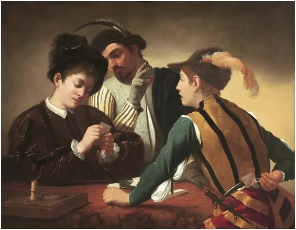
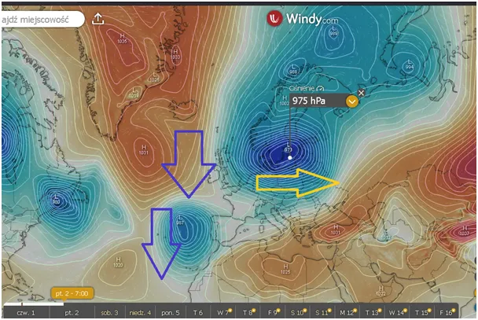
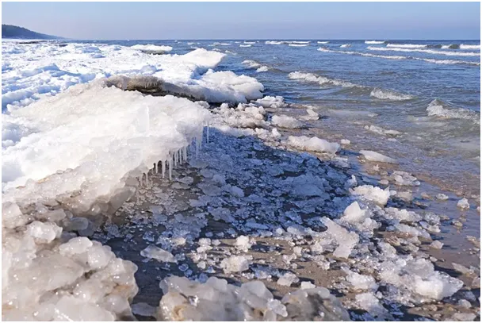

Nasze portfele i nasze dusze.
Głęboki niż zaparkuje nad Bałtykiem i kilka dni będzie się żywił jego ciepłem, co oznacza szybkie wyziębienie naszego morza. W poprzednich latach północny Bałtyk zamarzał coraz intensywniej, będziemy się z zapartym tchem przyglądać jak to się rozwinie w tym roku, zwykle ma to miejsce na początku lutego.

Pamiętam zwały morskiego lodu na plaży, kilka dekad temu było to normą i wszystko wskazuje, że za kilka dekad powróci. Kosmiczny cykl tańca Słońca z Ziemią trwa ok. 120 lat, czyli od jego maksimum w latach 90-tych dwudziestego wieku do minimum zostało raptem 27 lat, czyli mniej niż połowa okresu spadku.

Wyliczyłem i opisałem to dokładnie tu: https://pawelklimczewski.pl/2024/10/27/cyklony-i-slonce-postscriptum/
Ciągłe obserwacje aktywności cyklonów, które są miarą termiki Ziemi, potwierdzają ten trend, ostatni bilans 2025 opisałem tu : https://pawelklimczewski.pl/2025/12/03/jak-nie-ksiezyc-to-kto/
Po ataku zimy będziemy w prasie czytać jak to "globalne ocieplenie" spowodowało "lokalne oziębienie". Zamknijmy wszelkie profile z takimi sensacjami, szkoda czasu na dyskusje z tymi, którzy ignorują fakty. Oczywiście, zmiany lokalne mogą być odwrotne od globalnych trendów, ale mamy dość danych, aby widzieć z lotu ptaka całą Ziemię. Zbieram te dane mozolnie i po rozprawieniu się z narracją cowidową od kilku lat publikuję je na mojej stronie, której wparcie Wam polecam, bo przed nami jeszcze wiele szaleństw, które będziemy musieli rozłożyć na czynniki pierwsze i sfalsyfikować. https://pawelklimczewski.pl/
Ten rok, 2026, będzie zalewał nas wszechobecną AI, nachalnie będziemy przekonywani o wyższości maszyny nad człowiekiem, co jest oczywiście absurdem. Owszem AI potrafi robić różne diabelskie sztuczki z naszą percepcją , ale to jest numer stary jak gra w trzy karty na bazarze. Zawsze chodzi o nasz portfel i duszę!
Grafika: „Grający w karty” ("Szulerzy" ) Michelangelo Merisi da Caravaggio , namalowane około 1594–1595 roku
Paweł Klimczewski